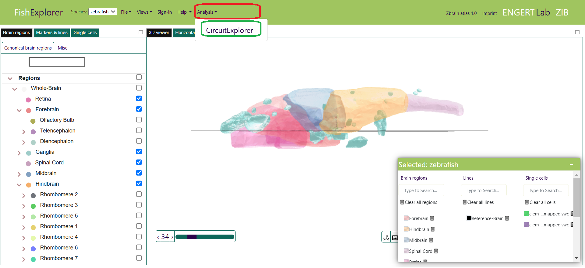
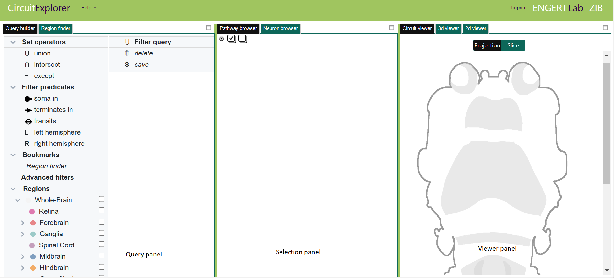
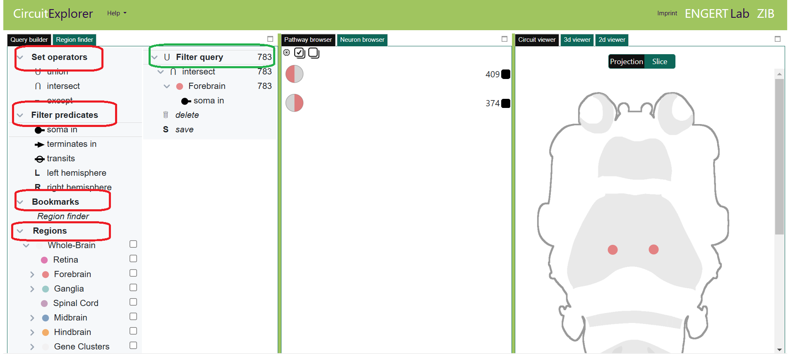
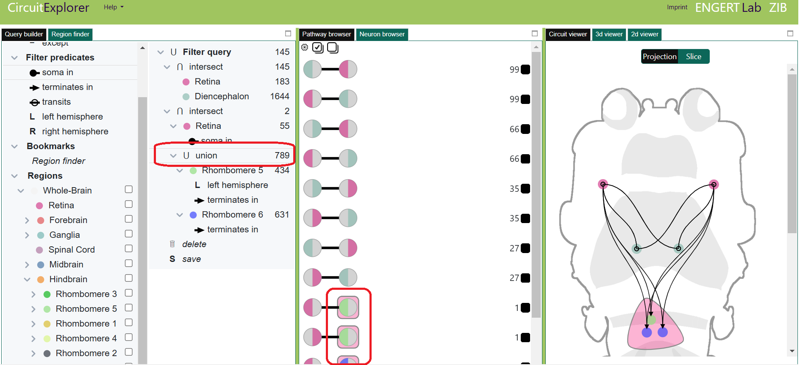
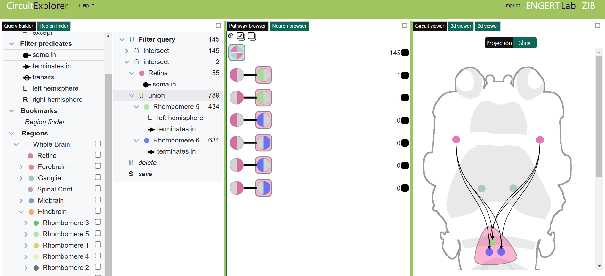
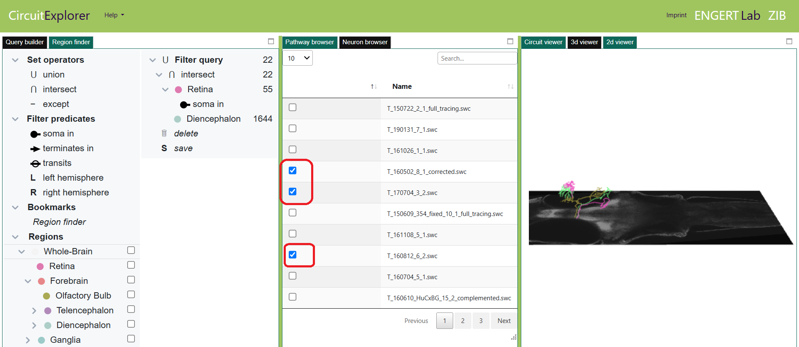
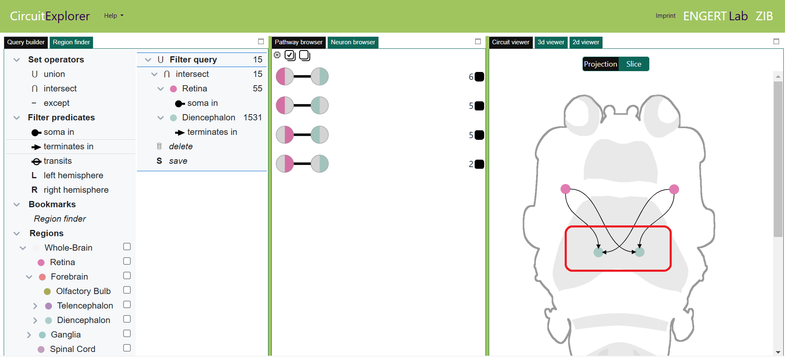

Getting started
-
CircuitExplorer is a web-based platform for exploring hypotheses about neural circuits.
Neurobiologists often have hypotheses in mind related to neural circuits and like to filter neurons of interest in the existing databases.
Currently, it is available for only larval zebrafish dataset.
This section provides a step-by-step introduction to the visual components of the CircuitExplorer.
To do so, please follow the steps described below:
-
Restart FishExplorer by hitting the refresh button of the browser.
This will start the 3D viewer as the default window, as shown below.
Click the “Analysis” menu (encircled red in the image below).
As a result, the “CircuitExplorer” button (encircled green in the image below), will appear.

-
Click the “CircuitExplorer” button.
As a result, the CircuitExplorer page, as shown in the image below, will appear
in the new tab.

-
The CircuitExplorer tool consists of three main panels (from left to right):
- Query panel: Query builder
- Selection panel: Pathway browser, Neurons browser
- Viewer panel: Circuit viewer, 3D browser, 2D browser
Each of these panels offers several tools. The one with “black backgrounds” is currently active.
-
Tab “Query builder”
The “Query builder” consists of two juxtaposed trees,
The left tree contains all components that are needed to build a circuit query.
The right tree is a representation of the nested filter query, which produces
a filtered set of neurons that realize the neural circuit (encircled green in
the image below).
The elements to build circuit query include “Set operators”, “Filter
predicates”,
“Bookmarks” and subtree “Regions” with predefined parcellations (encircled red
in the image below).
The user builds the query by dragging and dropping the elements
from the left tree into the query tree
(See also the detailed explanation in the tutorial, “Elementary case study”).

-
Tab “Pathway browser”
The “Pathway browser” lists all possible pathways related to the current query.
By default, all pathways are selected.
Users can select or deselect the pathways of interest by clicking on them.
If a set operation is selected, pathways will be enclosed by an envelope (encircled red in the image below).

If a set operation is collapsed, pathways will be collapsed in the "Pathways browser" as well as in the "Circuit viewer"(encircled red in the image below) tab.
-
Tab “Neurons browser” in the middle panel
The “Neurons browser” lists all the neurons filtered related to the built hypothetical neural circuit. Users can load or unload the neurons in the “3D viewer” by clicking the checkbox in front of them (encircled red in the image below)
-
Tab “Circuit viewer”
The “Circuit viewer” provides intuitive visualization of the built neural circuit and corresponding pathways. It is based on the real anatomy of the zebrafish. We have used two nodes per brain region to distinguish between the left and right hemisphere. The connections between the nodes are drawn using smooth curves. An arrow at the end of the curve indicates the `terminates in' relation (encircled red in the image below).
